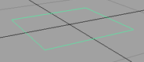
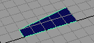
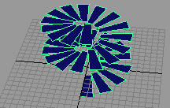

以下示例说明了如何使用动画快照创建类似于楼梯的模型。
使用动画快照
- 选择。
将在场景中显示一个简单的平面曲面。
这将作为楼梯的底部台阶。如果需要，可以缩放平面并移动其 CV，以使平面看起来更像台阶。
 - 选择“动画”(Animation)菜单(按 F4 键）。
- 平移台阶，以使其一条窄边接触世界原点。
- 按 Insert 键或 Home 键 (Mac OS X) 以显示步长的枢轴点。
- 将枢轴点平移到世界原点。
- 再次按 Insert 键或 Home 键退出枢轴点模式。
- 回放动画，并选择以在开始时间设置关键帧。
- 为场景指定一个较短的播放范围。例如，24 帧。
- 将“当前时间”(Current Time)指示器拖动到播放范围的末尾。
- 将台阶沿 Y 轴向上平移约 10 个单位，然后设置一个关键帧。
这将创建台阶垂直移动的结束位置。
- 在“通道盒”(Channel Box)中输入 720 作为“旋转 Y”(Rotate Y)，然后设置一个关键帧（按 S 键）。
这将创建台阶旋转的结束位置。
- 回放并播放动画以观察台阶的移动。
- 选择该台阶。
- 选择“可视化 > 创建动画快照”(Visualize > Create Animation Snapshot) >
 。
。
- 对于“时间范围”(Time Range)，启用“时间滑块”(Time Slider)，然后将“按时间”(By Time)设置为 1。
这些设置将在整个“时间滑块”范围内，按照固定时间间隔创建动画几何体的快照副本。“按时间”(By Time)的值设置创建快照的时间间隔。
而如果为“时间范围”(Time Range)选项启用了“开始/结束”(Start/End)，则可以为动画几何体输入“开始时间”(Start Time)和“结束时间”(End Time)（时间范围）。
- 在“动画快照选项”(Animation Snapshot Options)窗口中，单击“快照”(Snapshot)按钮创建楼梯。
请耐心等待操作完成。
提示： 按 Esc 键可退出长时间的快照计算。原始对象和动画保持不变。在“大纲视图”(Outliner)中，台阶的副本包含在新组 snapshotGroup 下。